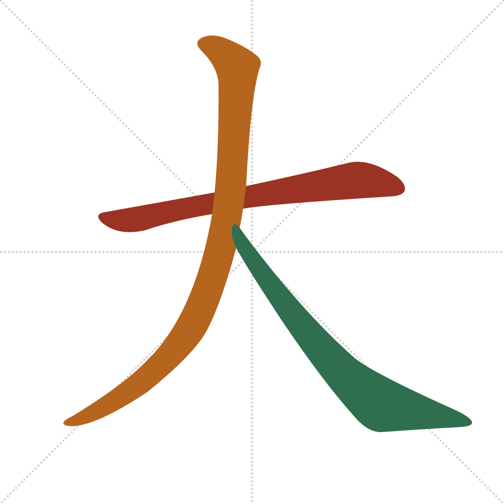
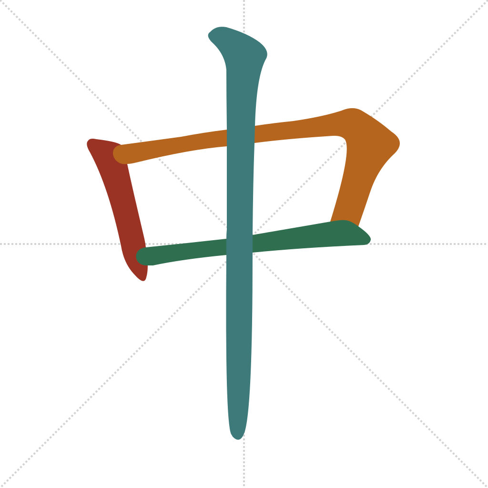
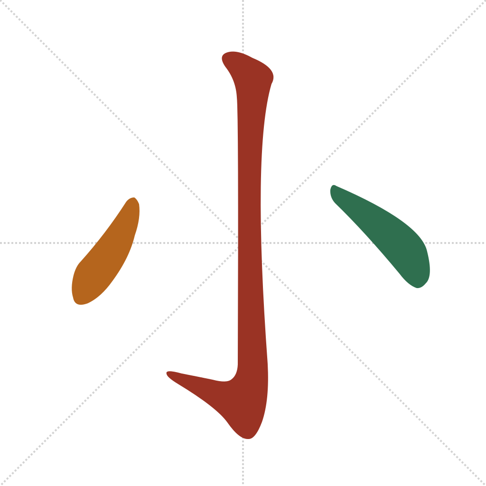

Lesson 3 · Foundational Components
Three more pictographs — and this trio earns its keep almost immediately: 大/中/小 (big/middle/small) is exactly what's printed on every drink, snack, and clothing size you'll meet while travelling.
Quick recall — click each card to flip it:
大 and 中 are clean demonstrations of the two rules from Lesson 1:

中 is 口 (Lesson 1's enclosure example) with one long vertical line drawn straight through the middle. The box still gets closed before anything else happens to it — the piercing stroke comes last of all:

小 shares the hook pattern introduced in Lesson 2. The mainland standard starts with the centre vertical, the same "dominant centre first" pattern seen in 水:

tài — too, excessively / very. "Big" plus one extra dot — more than big. (Wiktionary: 太)
太 shows up constantly in spoken and written complaints and compliments alike: 太贵 (tài guì, "too expensive"), 太好了 (tài hǎo le, "great!" — note 好 from Lesson 2 reappearing), 太多 (tài duō, "too much").
Which component means "big / large"?
太 (大 plus one extra dot) most commonly means:
中 is built from 口 plus what additional stroke, drawn last?
On a drink menu, 大杯 most likely means:
As always, the Outlier Dictionary of Chinese Characters is the deepest source if you want the full etymological story behind any of these; Wiktionary entries are linked inline above for a free second opinion.
Out in the world: look for 大/中/小 anywhere sizes are marked — drink cups, clothing tags, food portions. It's one of the few character sets you'll get to test immediately, the next time you order something.